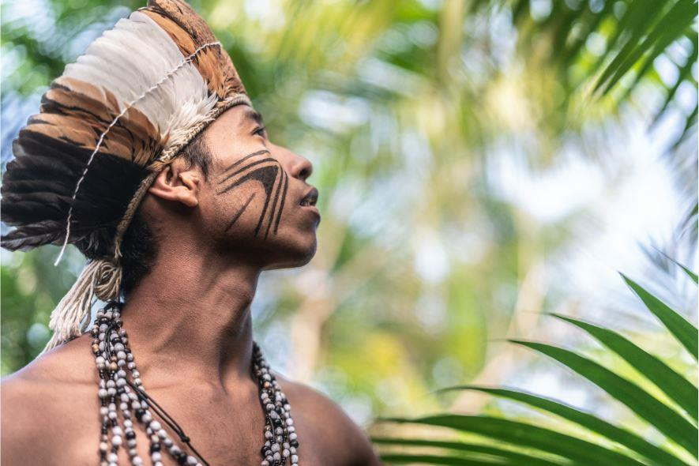

há mais de 15.000 anos. Antes da colonização europeia, desenvolveram sociedades diversas, com organização social, economia e cultura ricas, baseadas na caça, pesca, coleta e agricultura. Após a chegada dos portugueses em 1500, os povos indígenas enfrentaram a violência, a escravização e doenças que dizimaram populações inteiras, além de terem seus territórios tomados. Hoje, lutam pelo reconhecimento de seus direitos e pela preservação de suas culturas, presentes em todo o território brasileiro
